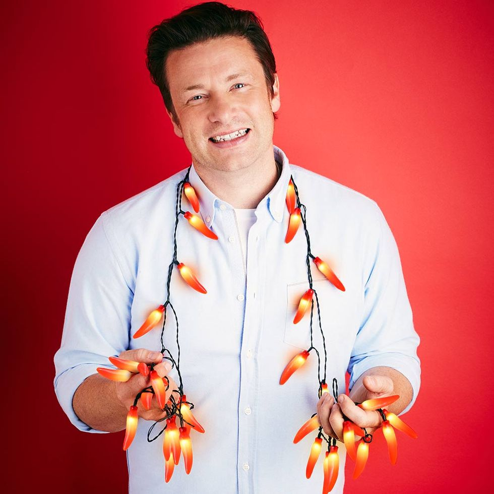

Gordon Ramsey
Este chef británico es famoso por su estilo directo y sus programas de televisión como "Hell's Kitchen" y "MasterChef". Tiene múltiples restaurantes galardonados en todo el mundo.
Anthony Bourdain
Bourdain fue un chef, autor y presentador de programas de viajes culinarios como "Parts Unknown" y "No Reservations". Su enfoque aventurero y su narrativa enriquecieron la exploración de la gastronomía y la cultura de todo el mundo.

Jaime Oliver
Un chef británico conocido por su enfoque de cocina saludable y su activismo en torno a la alimentación y la nutrición. Ha publicado numerosos libros de cocina y ha tenido programas de televisión populares.